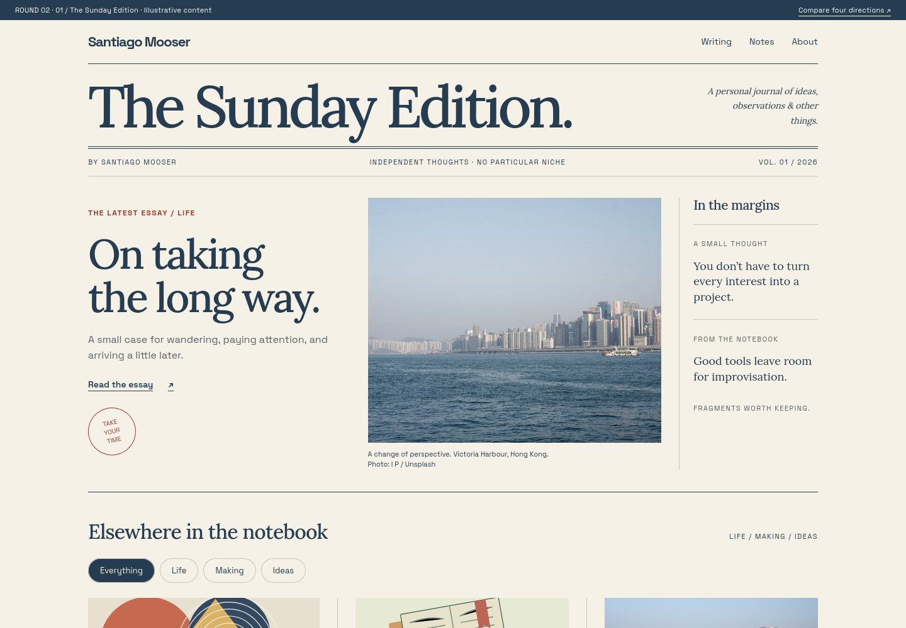
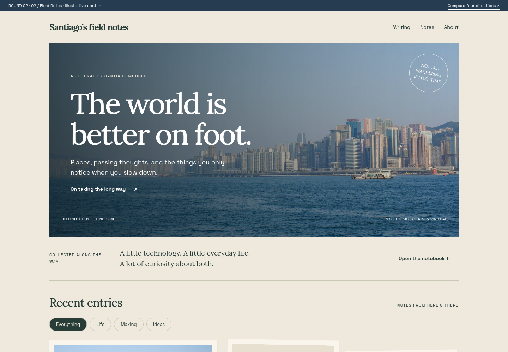
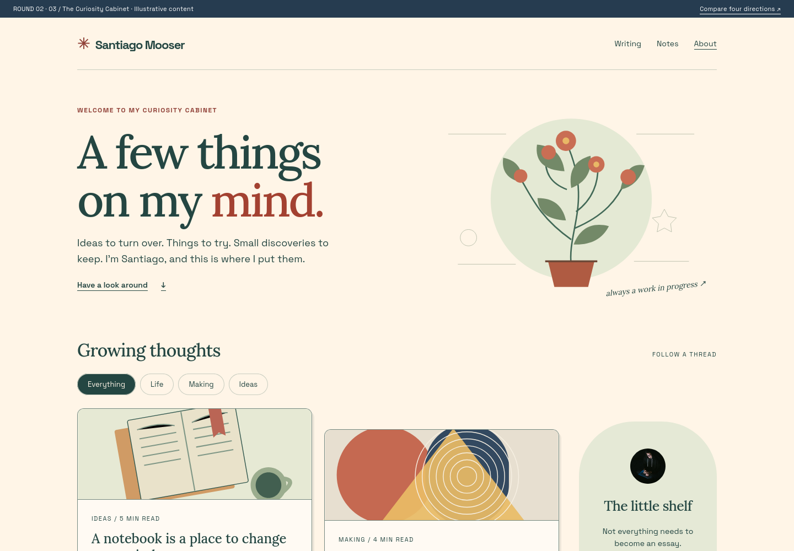
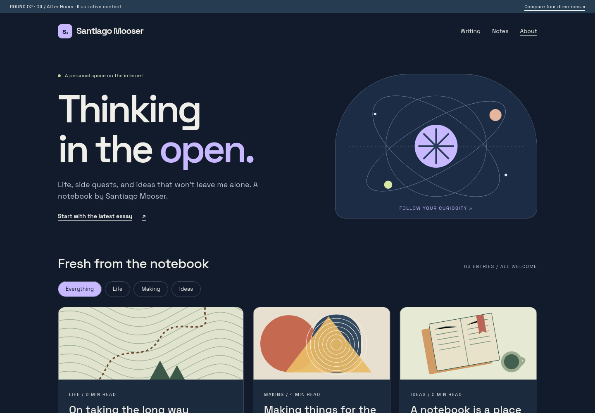

01
The Sunday Edition
Editorial · Layered · Assured
A generous masthead, a proper lead story, harbour photography and
thoughts in the margins. Your own small magazine, with slate ink
and vermilion accents.

02
Field Notes
Photographic · Tactile · Personal
A cinematic cover, soft paper, forest-green details and entries
that feel collected along the way. The most atmospheric direction.

03
The Curiosity Cabinet
Illustrated · Warm · Exploratory
Handmade-feeling illustrations, growing thoughts, unexpected
colours and a shelf for small discoveries. A home for interests
that don’t fit one category.

04
After Hours
Dark · Colourful · Playful
Your existing dark slate, with a much bolder personality: lavender
type, orbital geometry, warm illustrations and a green strip of
passing thoughts.